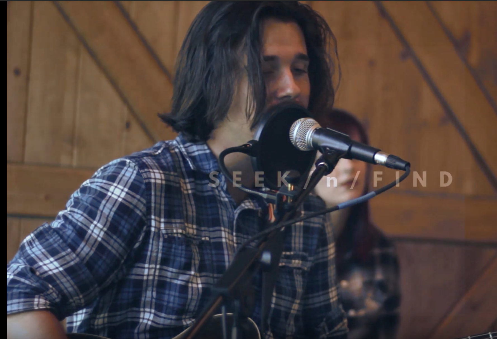
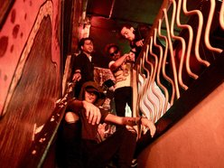

Audio Engineer • Sound Designer • Full Sail University Recording Arts Graduate
Recording Arts graduate with experience in recording, editing, mixing, mastering, sound design, and interactive audio.
Passionate about music, audio production, sound design, and technology. Experienced with Pro Tools, Logic Pro, Studio One, and Audiokinetic Wwise. I enjoy creating immersive audio experiences and continuously expanding my technical knowledge, including computer hardware, PC designing and building.
Pro Tools
Logic Pro
Studio One
Wwise
Avid S6
Neve 5088
API Vision
SSL Duality
Audio Engineering
Recording Engineering
Audio Editing
Audio Production
Music Production
Signal Routing
Microphone Techniques
Audio Mixing
Sound Design
Studio Operations
Demo reel featuring audio engineering and sound design work across recording, mixing, and editing. Includes selected projects demonstrating technical proficiency and creative audio problem-solving.

Recording and mixing project focused on balancing multitrack sessions and achieving a polished final mix.
Recording Engineer • Mixing Engineer

Mixing project emphasizing EQ, dynamics processing, and stereo imaging.
Mixing Engineer
Available for entry-level audio engineering, studio assistant, post-production, and interactive audio opportunities.
Email: ntreeshofms@gmail.com